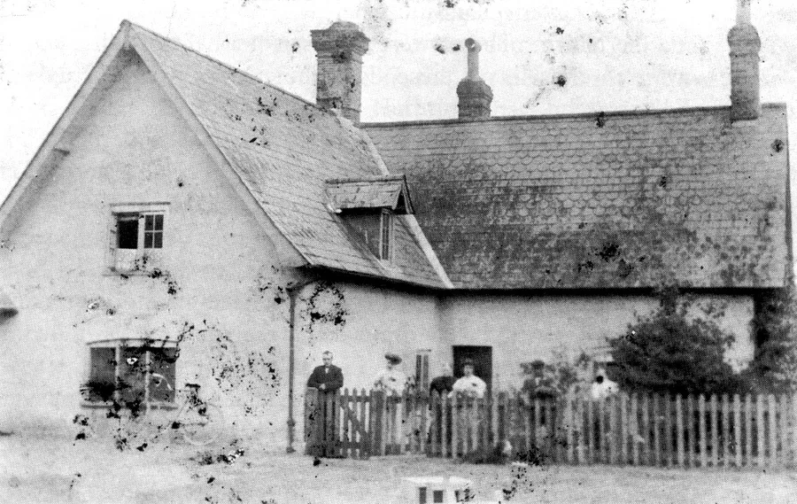
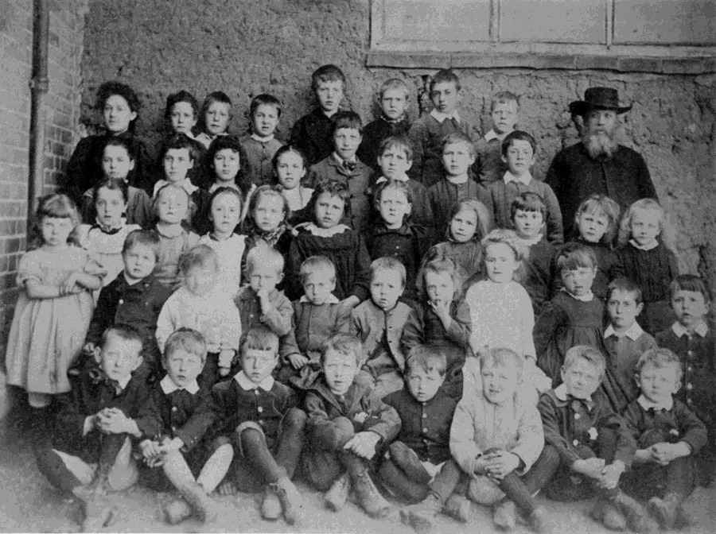
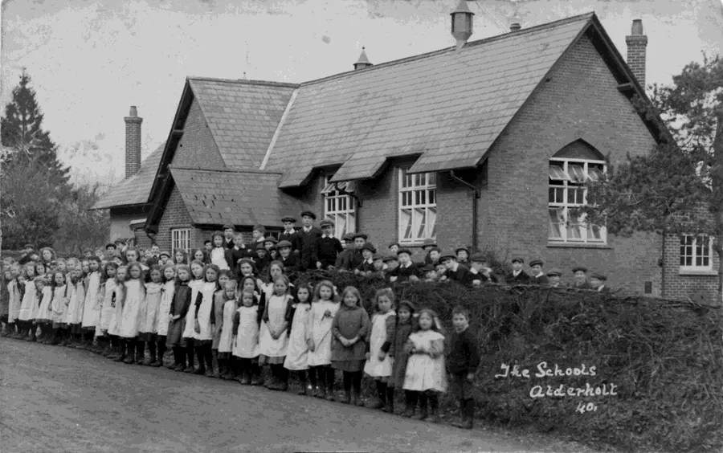
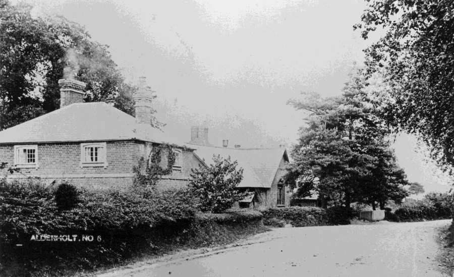
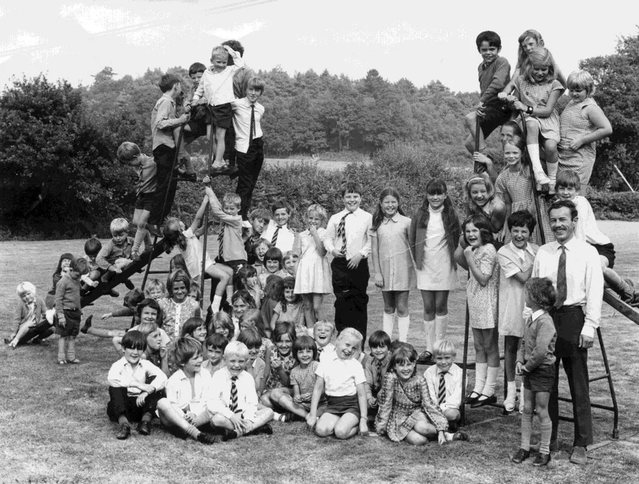

Schools
by Adrian King

There were a number of schools in the parish
- Alderholt Street – in the vicinity of Home Farm
- Alderholt St. James – National school
- Crendell – In the Methodist Church. For many years there were still desks in the schoolroom.
- Cripplestyle – Near Ebenezer Chapel
- Lower Daggons – On the north side of the wood between Lower Daggons and Crendell
Cripplestyle
During the 1840’s Samuel Williams persuaded the men of his church to build a school and a cottage attached to it for a teacher to live in. Both buildings were made from mud and thatch. The financial support and also that of the salary for the teacher could not be raised locally so it fell upon the minister to travel widely to seek support for this venture.
A teacher named Charlotte was there during the 1850’s but she left to marry one of the Fry’s up at Pye Lane farm.
Julia Annie Davies a pretty and petite young woman of twenty-five years who came from Abergavenny replaced her. Owen Davies said that she was far too attractive for some of the more sober matrons of the chapel. One of them on being asked, “She was beautiful, wasn’t she?” replied guardedly “There are different types of beauty.” Many a heart sank when she married Mark Nicklen of Alderholt in 1885.
The school premises were destroyed by fire on 22nd October 1886. It was thought to be caused by an incendiary. Dennis Bailey had always wondered where the building was. He says,
"I mentioned it to Dennis Manstone who lived almost opposite the chapel for many years of his life and he said that he knew where it was.
For 50 years I had been asking this question but no one knew yet I must have asked everyone except him. He took me less than 100 yards up the track toward Cow Hill Arch and pulled back some hedge and brambles and there was a beam which made up the foundation of the school. It was showing signs of being burnt which tied in with its eventual demise."
Alderholt
St. James School — full name Alderholt St. James CE VC First School — is the old church foundation school originally situated near the church on land made available by the Third Marquis of Salisbury and dates from 1847. Until this date there were only the fee-paying Little Dame schools dotted around but these gradually disappeared.
The school was funded in part by the Marquis.

Some parts of the original building were constructed from cob with a slate roof and the headmaster’s house was part of the building. The school was enlarged in 1874 to take 156 pupils and again in 1912. Later a schoolhouse was built opposite the church and the old schoolhouse either demolished or incorporated into the school buildings during redevelopment. Plans in 1928 to make Cranborne a Senior School took many years to happen.
My mother Mavis Bailey (1930 – 2004) left the village school at fourteen in 1944.
For most of the children this would be the only education that they would get. They would start at five years and continue until they were fourteen. Scholarship examinations would be offered to school children aged eleven and a few would then travel on the train to Grammar Schools at Wimborne for boys and Poole/Parkstone for girls.

With the village growing so big a new St. James school costing £1½ million was built in 1982 on Park Lane. The 6th Marquess of Salisbury opened the building on the 16th March 1983.
Stan Broomfield says that the school comprising an area of 3.5 acres was built on land extracted from Norman Smith’s long garden and paddock on Station Road, and land purchased from landowners on Park Lane primarily the Brewer family.
The roof of the old school was badly damaged by fire on 2nd August 1998. Four pumps attended the fire. The old school continues to be used for the village youth organisations primarily KingsWood Nursery.

On Tuesday 1st December 2015, the new school became an Academy joining with
- Sixpenny Handley First School
- Oakhurst Community First School
- Three-Legged Cross Nursery and First School
- St. Mary’s CE VC First School, West Moors
- St. Ives Primary and Nursery School
to form the Heath Multi Academy Trust.

Head Teachers
| Old School in Daggons Road | |
| Mr. Joseph John Hinton | KC1875 * |
| Mr Alan Hetherington | |
| Mr. George William Fletcher Mann | 1874 – 1908 |
| Mrs. Rose Jane Mann | |
| Mr. H. G. Bracher (Percy Charles) | 1910 – 1937 |
| Mr. Henry Harvey | 1937 – 1959 |
| Mr. A. E. Barfoot | 1960 – 1970 |
| Mr. P. W. Richardson | 1971 – 1973 |
| Miss K. Mitchell | 1973 – 1982 |
| * KC Kelly's Cranborne | |
| New School in Park Lane | |
| Mrs. S. Davies | 1982 – 1993 |
| Mrs. Karen Tomkins | 1993 – 1997 |
| Mrs. Elizabeth Stewart | 1997 – 2001 |
| Mrs. Clare Tickel | 2001 – 2011 |
| Mr. Andy Poole | 2012 – 2015 |
| Mrs Kathryn Cousins | 2015 – 2016 |
| Mrs. Clare Hewitt | 2016 |
| Miss Jo Hudson | 2017 |
